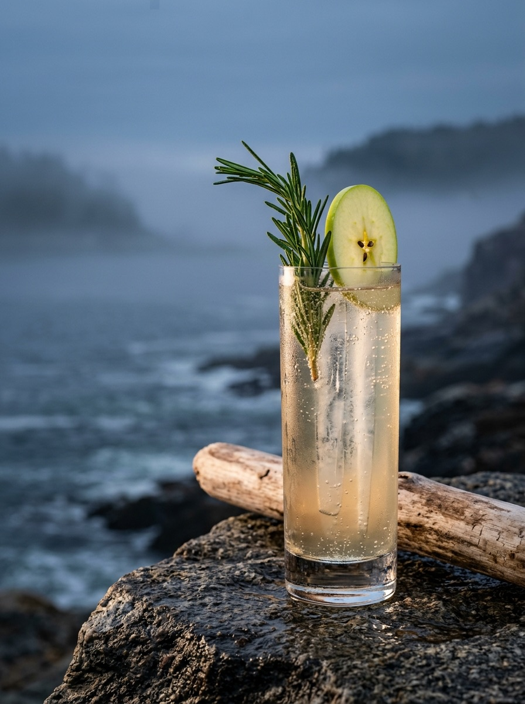

✨ AI Illustration
Collins glass over high-clarity ice spears
FIRST WATCH · AFTERNOON TO DUSK
SHAKEN & TOPPED
The Casco Bay Crossing
A crisp, herbaceous highball that bridges the gap between summer greenery and autumn orchard fruit. The snap pea and rosemary profiles of the gin pair with dry cider, while a touch of elderflower and saline mimics a cool sea breeze.
PROFILE:
Crisp
Botanical
Subtly Floral
Effervescent
ELEMENTS IN THE GLASS
- Bimini Gin
- St-Germain Elderflower
- Dry Artisanal Hard Cider
- Fresh Lemon Juice
- Rich Honey Syrup (2:1)
- Sea Salt Saline
- Garnish: Fresh Rosemary & Crisp Green Apple